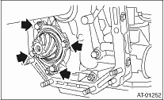

1. Assemble the drive pinion assembly to the oil pump housing.
NOTE:
• Be careful not to bend the shim.
• Be careful not to press-fit the pinion into housing bore.
Tightening torque:
40 N·m (4.1 kgf-m, 29.5 ft-lb)

2. Join the converter case with the transmission case. 
3. Install the reduction driven gear.
4. Install the reduction drive gear.
5. Join the transmission case and the extension case.
6. Insert the inhibitor switch and transmission connector to the stay.
7. Install the air breather hose.
8. Install the ATF cooler inlet and outlet pipes.
9. Install the oil charge pipe together with an O-ring.
10. Insert the input shaft while rotating it lightly by hand, and then check the amount of protrusion.
Normal protrusion A:
50 — 55 mm (1.97 — 2.17 in)

11. Install the torque converter clutch assembly.
12. Install the transmission assembly to the vehicle.